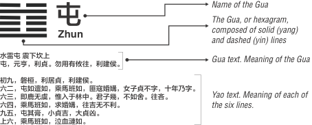
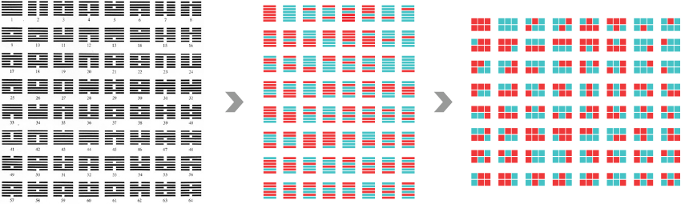

Movements of Change
I-Ching is one of the most important books in Chinese history published in the late 9th century BC. While originally used as a divination system, I-Ching is also considered to have a direct inspiration to much of Chinese culture and philosophy including the famous Confucius and the Taoism founder Lao-Tzu. The goal of the project is to overcome cultural and language barriers, and investigate more innovative methods to objectively analyze and interpret I-Ching than language translations.
One unique attribute about I-Ching is that it uses graphic representations- the Hexagrams- to conceal the meaning of its oracular language. It is built around sixty-four hexagrams with a group of six lines for each. Each hexagram has a statement, and each of the six lines also contains comments that correspond to the six stages of a particular situation. The statements and comments provide a vast set of possible interpretations for I-Ching. Although there have been many versions of translations, from modern Chinese (ancient Chinese language is known to be extremely concise with many possible interpretations) to western languages, it can be a lifetime endeavor to reveal the linkage among all elements and the sequences of structures in I-Ching.
This project uses text mining and modern interactive data visualization techniques to reveal new patterning insights of I-Ching from both divinatory and philosophical perspectives. We consider the pattern of hexagrams and their relationships as a binary coding system. The lines in I-Ching describe life as cyclical movement, and each line represents one of the fundamental assertions of the Changes. A hexagram in the original I-Ching is a formation of six straight or split lines representing the stages and combinations of Yin and Yang- the world of opposites. They are arranged in numerical order from one to sixty-four. Adding an additional dimension (from lines to forms) and another color channel to the graphic symbols can better reveal the sequence structures and the inverse and opposite patterns of the neighboring hexagrams.
The visualization approach and research process investigate four aspects of I-Ching: the cyclical movements among different stages, the thematic categories of the Decisions, the occurrences of keywords related to divination, and the geometrical patterns of the Hexagrams. Users may browse through the four tabs listed on the right side of the window panel to explore. A brief explanation of the four approaches is explained below:
The Yao Texts（爻辞）are originally composed by the Duke of Zhou. They are analysis of each of the six individual squares (the six lines from the original Hexagram), which correspond to the six stages of a particular situation. One of the most important messages from I-Ching is that everything is in a process of continous change, rising and falling in a progressive evoutionary advancement. Therefore, we intend to identify the moment when the transition from one extreme to another occurs using the keywords in the Yao Texts.
The three most frequently occured characters in all Yao texts are 无咎(no misfortune)，吉 (auspicious)，and 凶(ominous)，and they happen to represent the three stages from the favorable to the unfvaorable time and situation. When each of the keywords occur next to the other is when the transition of fortune occurs. These transitions are highlighted with user interactions.
The sixty-four Decisions (Gua text 卦辞) are brief summaries of the meaning of each gua, dense in symbolic meaning. They are King Wen's own assessment of the situation together with moral advice. The themes are generated from the Gua text (the Decisions) based on semantics of the sentences and keywords.
The category of Mindset relates to situations or advices relate to psychological attitudes and faith. The Behavior category is about actions and activities. Journey is both physical and metaphorical. It's the cycle of movements and change. The Orientation theme includes Guas in which the navigational direcitons are mentioned, such as east, west, south, and north. The category of Relatioship relates to the communication and connections with other human being. Some themes are almost solely relying on specific keywords. 家人 means households or family members, thus it is in the catogory of Family. 大人 means a superior or authority who is in a powerful position, and it relates to Career. 利建侯 translates to "establishing fuedal lords", so it goes into the Politics category. The character 师 means Military. Most Decisions contain more than one defined themes. Each theme is connected to the corresponding Gua/Hexagrams to show connections and frequency.
The Gua text, sometimes is called the "Decision", is analyzed by filtering out the divination-related keywords. The fortune-telling keywords are categorized into three groups: positive (keywords indicate good fortunes), neutral (keywords relate to a state that is neither pleasant nor painful), and negative (keywords relates to danger, warning, and other unfortunate events).
Each Gua consists of six Yao. In Chinese, Yang Yao are represented by the number 9, Yin Yao by the number 6. For instance, a solid line at the second place is called Second Nine. The first part of the Geometrical Pattern visual analysis reveals the cases when Yin or Yang Yao appears at the the same position in a Gua.
Each Gua can be divided into two parts - the upper (outer) and the lower (inner). Fu Xi drew only eight Gua and each of the eight Gua consists of only three lines. These original Gua (the Trigrams) have corresponding names that become the basic elements of Yin and Yang. Later, these eight Gua were combined with one another and thereby a new system of sixty-four Gua was obtained. Thus, the eight Gua were known as the Primary Gua. The second part of the Geometrical Pattern visual analysis intends to highlight these Primary Guas.
The third part of the Geometrical Pattern visual analysis points out the connections between the Gua. Some are opposite to one another: the positions of the Yin and Yang Yaos are exchanged; some are inversed: the lower and upper trigrams flip the spot and results in a mirror effect.